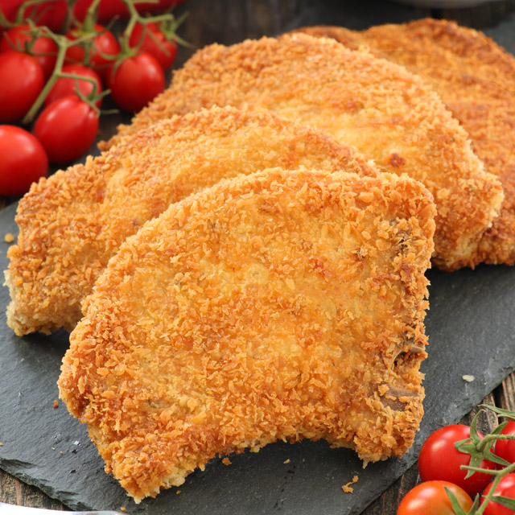

Fried Porkchop Recipe

Description
Homemade Fried Porkchop isn't as hard to make as it seems. Don't be intimidated by all the layers of delicious Italian flavor — try this homemade porkchop recipe today!
Ingredients
- 1kg pork chops
- Breading
- Bread crumbs
- Basil, oregano, salt, black pepper
- Eggs
Steps
- Season meat with spices
- Coat in breading
- Dip in egg
- Coat in breadcrumbs
- Fry until golden brown